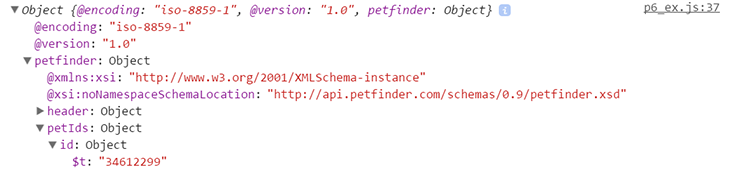

Using the Petfinder API's pet.getRandom method to populate the table with a different cat's information upon each load.
Next, let's create a widget that generates a table like the one before, but for a random pet. For this, we'll se use the Petfinder API's pet.getRandom method.
function requestJSONP(url) {
var script = document.createElement('script');
script.src = url;
script.onload = function () {
this.remove();
};
var head = document.getElementsByTagName('head')[0];
head.insertBefore(script, head.childNodes[0]);
}
function getKitty(data) {
console.log(data); //test
}
var url = 'http://api.petfinder.com/pet.getRandom?format=json&key=yourkeyhere&animal=cat&location=11215&callback=getKitty';
requestJSONP(url);
The ID of the random pet is in petfinder.petIds.id. If you refresh the page, you'll notice that the ID is different each time. We can use the ID to call our previous getKitty function for the random cat.
This time, we first call the requestJSONP function on a URL formatted for the pet.GetRandom method, with the animal=cat argument to restrict our search to cats. Within the new getData function, we call our previous function to populate the table for that particular cat.
Now when you refresh the page, the table is updated based on the ID in the pet.getRandom response!
Cat of the Day |
|
|---|---|
Name: |
|
Age: |
|
Sex: |
|
Breed: |
|
City: |
|
function getKitty(data) {
var response = data.petfinder.pet;
var image = new Image();
image.src = response.media.photos.photo[3].$t;
image.setAttribute('class', 'img-responsive');
image.setAttribute('alt', response.name.$t);
document.getElementById('image').appendChild(image);
document.getElementById('name').textContent = response.name.$t;
document.getElementById('age').textContent = response.age.$t;
document.getElementById('sex').textContent = response.sex.$t;
for(var i = 0; i < response.breeds.breed.length; i++){
var newItem = document.createElement("li");
var textNode = document.createTextNode(response.breeds.breed[i].$t);
newItem.appendChild(textNode);
document.getElementById('breedlist').appendChild(newItem);
}
document.getElementById('city').textContent = response.contact.city.$t + ', ' + response.contact.state.$t;
}
function getID(data) {
var petID = data.petfinder.petIds.id.$t;
var petURL = baseURL + 'pet.get?format=json&key=' + key + '&id=' + petID + '&callback=getKitty';
requestJSONP(petURL);
}
var url = baseURL+ 'pet.getRandom?format=json&key=' + key + '&animal=cat&callback=getID';
requestJSONP(url);
Copyright © Morgan Brenner · 2016